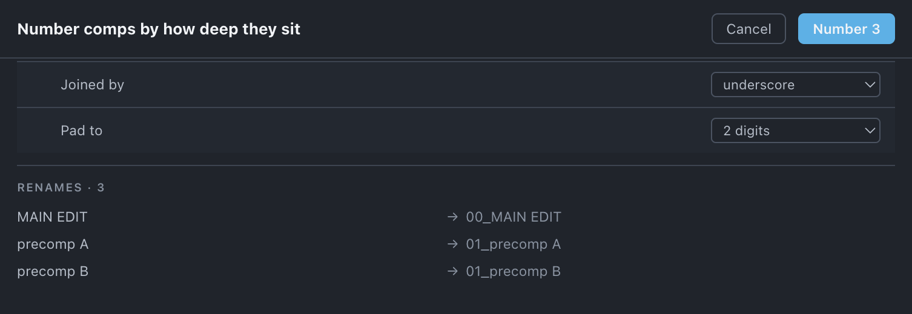

Number comps
Prefixes each comp with a number for how deep it sits under your masters, so the Project panel sorts by structure rather than by the order you happened to build things in.
Use it when
- The Project panel's alphabetical sort tells you nothing about what feeds what.
- You are handing the project on and want a reader to see the tiers at a glance.
- A build grew precomps inside precomps and you have lost track of which level a comp is on.
- You have just declared masters, and the structure now has a top to measure from.
What it does
Walks down from your declared masters and prefixes every comp it reaches with the depth it sits at — 00_ for a master, 01_ for what a master uses, 02_ below that. Depth stops at 3, so a deeply nested tree tops out at 03_. Re-running is safe: an existing numeric prefix is stripped before the new one goes on, so you get 01_Edit and never 01_00_Edit. Renamed comps have the expressions that name them repaired at the same time.
What it does not do: it does not move anything, it does not touch the disk, and it does not number footage, solids or folders — only comps. A comp nothing reaches is left unnumbered, because it has no depth.
Do it
- Declare your masters in the header if you have not — see Set up each project.
- Press Number comps.
- Set Joined by and Pad to if the defaults are not your convention.
- Read the preview — old name to new name, capped with a … n more count.
- Press Number n.
Scope. Whole project only. There is no scope switch: a depth prefix is a statement about the whole tree, and numbering half of one would describe nothing.

What you'll see
| Option | What it means |
|---|---|
| Joined by | underscore (default) · dash · dot — what sits between the number and the name. |
| Pad to | 2 digits (default) · 3 digits. Two gives you 00_…03_. |
The preview lists each comp as old name → new name, first eight rows and then a count of the rest. Comps that already carry the right prefix do not appear, because nothing changes for them.
Undo
One ⌘Z. Nothing on disk changes.
Watch out
Things you might not think to do
- Number the folders to match. Settings › Folder naming numbers the template's folders (
00_comps,01_mov…) with the same separators, so the whole panel reads top-down. - Re-run it after restructuring. Move a comp up or down a tier and re-press: the old prefix is stripped and the new depth applied, so the numbers never drift out of step with the build.
- Use it as a check. A comp that comes back
03_when you thought it was one level down is a nesting you did not know about. - Run Rename afterwards. It leaves the numeric prefix alone unless you ask it to touch it, so a house style and a depth prefix can coexist.
Pairs with
Set up each project decides what the depth is measured from. Rename for everything else about names, and Organize if you want the folders to say the same thing the prefixes do.